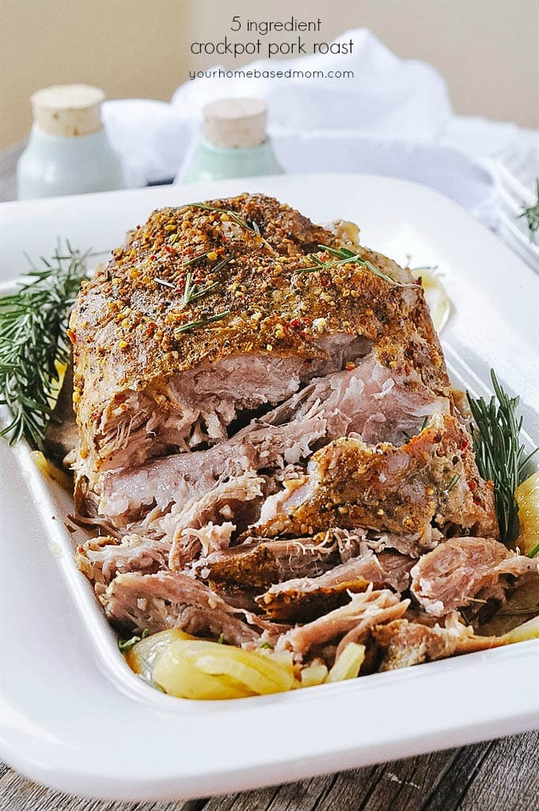

SlowCooker Pork

SlowCooker Pork
Easy and delicious slow cooker pork. Just make sure you
start it around 7 hours before mealtime. Sourced from
yourhomebasedmom.com
Ingredients
- 2 large sweet onions (sliced)
- 5 lbs pork shoulder roast
- 2 tbsp garlic & herb seasoning mix
- 1 tsp salt
- 2 cups chicken broth
Steps
- Grease a 6qt slow cooker with cooking oil
- Place onions in bottom of slow cooker
- Rub pork with seasonings
- Place pork on top of onions
- Pour broth over roast
- Cover and cook on low for 9-10 hours or on high for 6-7 hours. Meat should pull apart easily with a fork